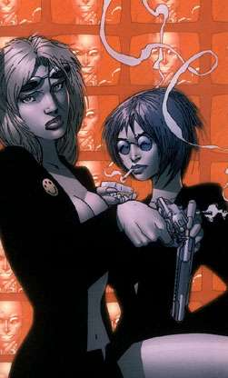

Role Playing Games
Velice nepresne prelozeno jako hry na hrdiny, spise vsak hrani charakteru.
V podstate se jedna o hru, ke ktere neni potreba nic vic, nez tuzka, papir a par kostek.
Hrani probiha tak, ze jeden z hracu je jakysi vypravec (reziser, gamemaster,
pan jeskyne, story teller...), ktery popisuje postavam svet, ktery si dopredu
vytvoril a deje, ktere se v nem odehravaji.
Ostatni hraci hraji sve postavy, ktere mohou byt v podstate cimkoli, co ve
vypravecove svete ma sve misto (vojaci, kouzelnici, zlodeji, upiri, vlkodlaci, draci, ale take treba kovari, rybari, lovci a sqatteri... temer vse je dovoleno).
Vse se odehrava v predstavivosti hracu.
Kdyz jsem vyse napsal, ze je potreba jen kostek, papiru a predstavivosti,
dopustil jsem se male lzi. Je sice mozne vymyslet sve svety a jejich pravidla, nicmene vetsina hracu pouziva, alespon pro inspiraci svety vytvorene nekym
jinym, jen je modifikuje podle svych potreb a zajmu.
Myslim si, ze je to tak jednodussi, navic to dava moznost, aby se mezi sebou domluvili i hraci, kteri spolu nikdy drive jeste nehrali.
Ja sam mam zkusenosti pouze z nekolika malo soubory pravidel (o nichz zde budu mluvit), ale na svetovych kniznich trzich jich existuje nepreberne mnozstvi.
Draci Doupe, Dungeons and Dragons, Advanced Dungeons and Dragons
Svet klasicke tolkienovske fantasy: trpaslici, elfove, kouzelnici, magicke
artefakty, mece, temne hvozdy a draci.
V USA vznikla prvni pravidla Dungeons and Dragons, nekdy v sedesatych letech dvacateho stoleti, od te doby se stale vyvyjeji a prodavaji.
Do Ceskoslovenska se hra dostala daleko pozdeji (snad nekdy pocatkem devadesatych let) v jakesi ne prilis povedene obdobe, pod nazvem Draci Doupe. Uspech byl samozrejme obrovsky, konkurence zadna. Tak se stalo, ze je Draci Doupe asi nejhranejsi RPG hrou v Cechach i na Slovensku. Existuje nekolik modulu a casopisu, ktere popisuji ruzne podivuhodne svety a ukazuji tak hracum cestu, jestli dobrou nebo spatnou je otazka nazoru; na ceskem internetu najdete na toto tema jiste
spoustu plamennych diskuzi.
Protoze i ja jsem byl vlnou Draciho Doupete zasazen (i kdyz pomerne nepatrne), existuje nekolik textu, pro ktere jsem vytvoril
samostatnou stranku. Je mozne, ze v budoucnosti na ni jeste neco pribyde, nicmene neni to prilis pravdepodobne.
Shadowrun

Kdyz v roce 1996 vysel cesky preklad pravidel, existovala jiz prvni stabilni generace hracu RPG u nas.
Proti amatersky splacanym priruckam Draciho Doupete s nehezkymi ilustracemi a spoustou tabulek byla nadherna, profesionalne udelana kniha naprosty zazrak, ale...
Potizi nastalo hned nekolik:
Prvni byla ta, ze Shadowrun je jakysi mix cyberpunkove estetiky ve stylu Williama Gibsona, beckove fikce Qentina Tarantina a "hack and slash" (bit a zabit) fantasy ve stylu osumdesatych let, coz je prostredi, ktere nebyla schopna zkousnout naprosta vetsina "profesionalnich" drakobijcu.
Dalsi problem je naprosto rozdilny herni system (hazeni kostkami je jine), ktery bylo potreba si precist a naucit se.
Posledni zasadni prekazkou k rozsireni teto hry byl marketing vydavatele, ktery sestaval z nedostatecne reklamy, prekladu "siteho horkou jehlou" a vysoke ceny samotnych pravidel.
I pres to vsechno je v dnesni dobe cesky preklad pravidel jiz naprosto rozebran, o dotisku se neuvazuje.
Ja sam povazuji Shadowrun, za pomerne univerzalni prostredi, podlozene velice zrucne zpracovanym hernim systemem. Zatim se mi vzdy podarilo najit spoluhrace, a co se RPG her tyce, tak prave Shadowrun je mym hlavnim zajmem, coz je take vydet na
strankach, ktere jsem pro nej vytvoril.
World of Darkness
Je relativni novinkou mezi ceskymi hraci. Neexistuje zadny oficialni preklad
anglickych pravidel do cestiny, coz se take, na muj vkus dost nemile podepisuje na jazyku hracu. Nicmene nutno uznat, ze pro lidi s kladnym vztahem k temnote a tajemnu, neni lepsi volby.
Word of darkness, je totiz obrovske mnozstvi kvalitne zpracovanych knih, ktere se zabyvaji upiry, vlkodlaky, kouzelniky, chrlici, pekelnymi demony a jim podobnymi bytostmi temnot, kterezto zasazuje mimo jine i do sveta dnesni reality.
Hral jsem pouze nekolikrat jako postava a musim rict, ze v pripade, ze by byl nejaky dost schopny vypravec se smyslem pro temnotu, mohlo by to byt velice
zajimave, bohuzel jsem nemel to stesti a vetsina her se nakonec stejne zmenila
v jakousi mestskou fantasy.
Myslim, ze Svet Temnoty, je narozdil od ostatnich, vyse zminovanych RPG her, potreba daleko vice citit. Je treba peclive si vybirat hrace, tvorit atmosferu pomoci kulis, mist a citlive propracovanych pribehu plnych vztahu, trvajicich nekdy i stoleti.
Doufam, ze jednou se mi podari najit vhodne spoluhrace...
22/09/04 17:47:14